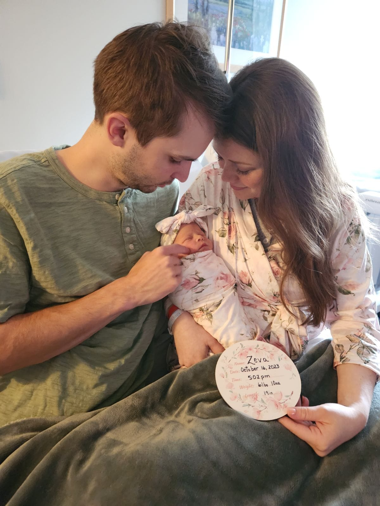
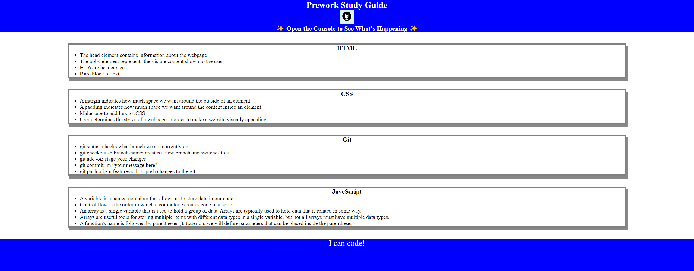

Hey, I'm Zachary Chapman—a programmer, gamer, and new parent. By day, I code solutions; by night, I conquer virtual worlds. Parenthood recently joined the adventure, adding chaos and joy. Join me as I share insights, experiences, and the delightful intersection of code, games, and parenting. Let's connect and explore together!
ABOUT ME

My Work

Starting the OSU bootcamp introduced me to web development through a hands-on project, where I mastered HTML, CSS, and JavaScript basics. Beyond coding, I learned about website structure and the importance of collaboration. This marked the beginning of my ongoing passion for web development, fueled by the solid foundation gained at OSU.
.png "Horiseon-Refactor challenge")
This project was given with motivation to refactor a website that aides accessibility. The goal was to contribute to a more inclusive web environment by ensuring usability for individuals with diverse needs. The project addresses the common issue of exclusionary web design by adhering to accessibility standards. Inthe development process we emphasized the importance of writing "DRY" (Don't Repeat Yourself) code, promoting efficiency and maintainability.
This project was given with motivation to refactor a website that aides accessibility. The goal was to contribute to a more inclusive web environment by ensuring usability for individuals with diverse needs. The project addresses the common issue of exclusionary web design by adhering to accessibility standards. Inthe development process we emphasized the importance of writing "DRY" (Don't Repeat Yourself) code, promoting efficiency and maintainability.